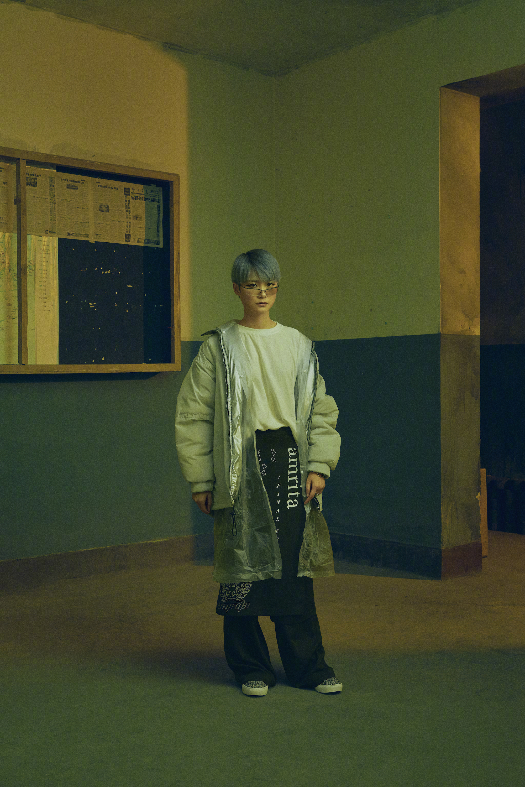

A Pop Song - 李宇春
词：李宇春
曲：Urban_Cla6ix (Park Junsu/Jung Yeonhun)
编曲：程天禹&TYZ
制作人：谭伊哲
这城市满眼霓虹
迷幻如梦闪耀夜空
穿行的冷漠人海
忙忙匆匆
想你总在零点钟
情绪泛滥越夜越凶
孤单的灵魂最爱
闹闹疯疯
看不清那一弯水中月亮
灯红酒绿买一杯娱乐至上
脚步摇晃心花怒放
天亮后街头独自游荡
它一直陪在身旁
A POP SONG
A POP A POP SONG
A POP SONG
最晚班地铁空空
玻璃窗上雾气朦胧
你走后的十一月
心如冰封
想你总在零点钟
情绪泛滥越夜越凶
耳朵里塞满音乐
两眼放空
看不清那一弯水中月亮
灯红酒绿买一杯娱乐至上
脚步摇晃心花怒放
天亮后街头独自游荡
它一直陪在身旁
A POP SONG
A POP A POP SONG
A POP SONG
A POP A POP SONG
谁能够尝得到谁喝过的冷汤
在一人独处的屋檐下方
谁又能看得透谁隐藏的悲凉
在川流不息的城市中央
无妨
A POP SONG
A POP A POP SONG
A POP SONG
A POP A POP SONG
A POP SONG
